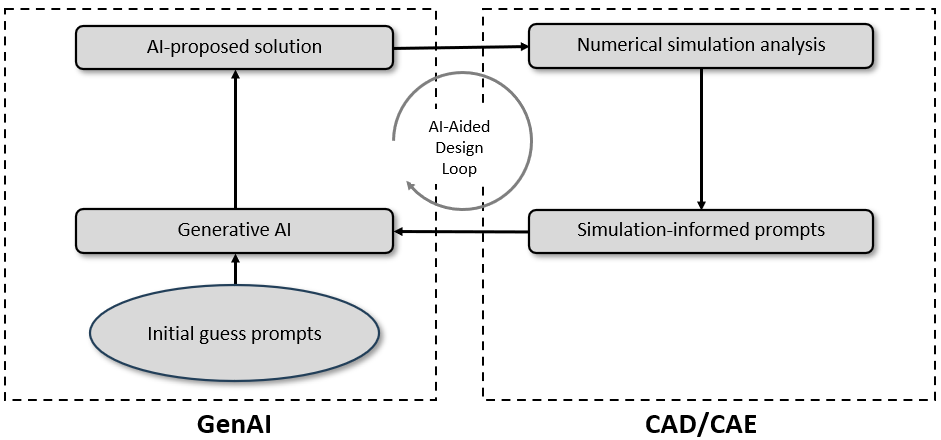
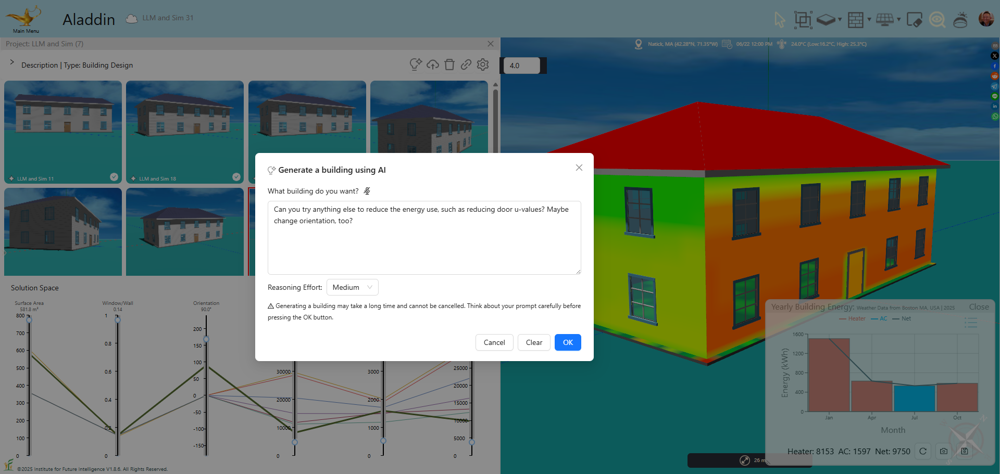
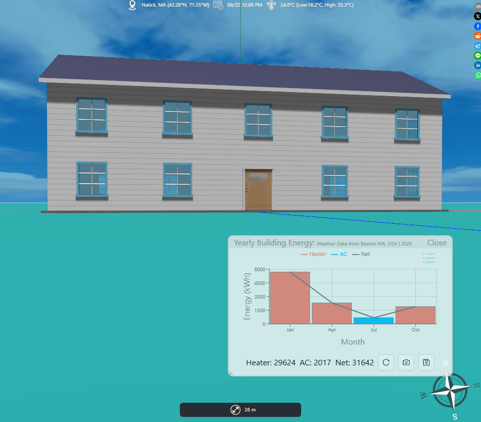
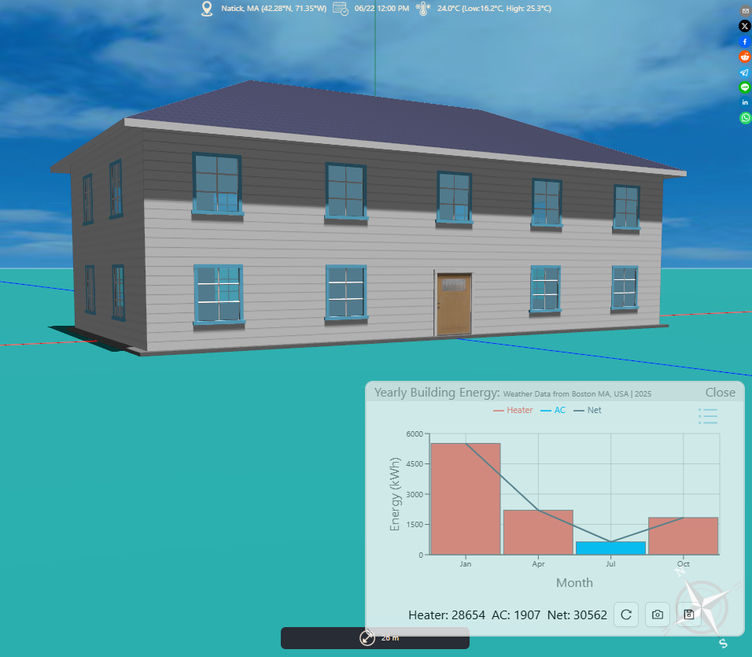
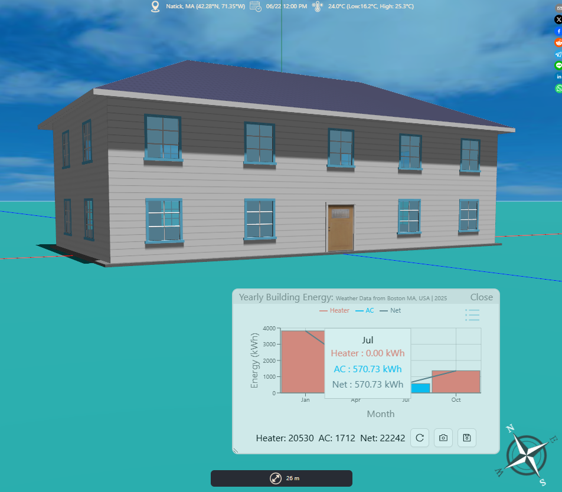
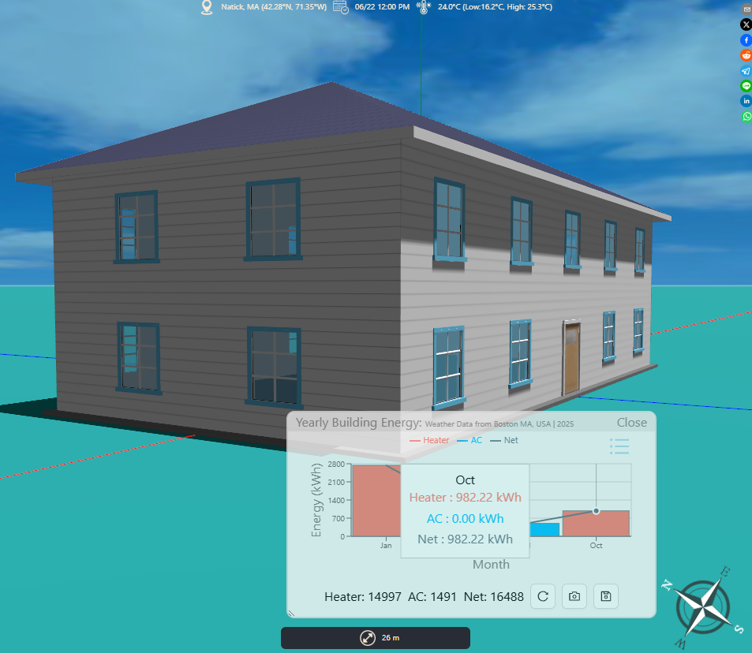
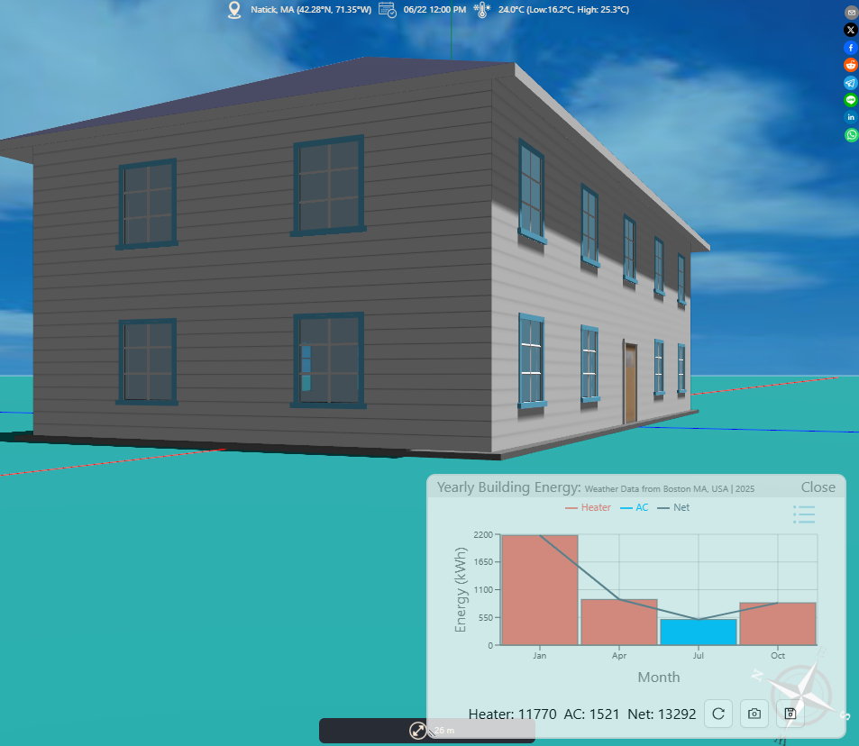
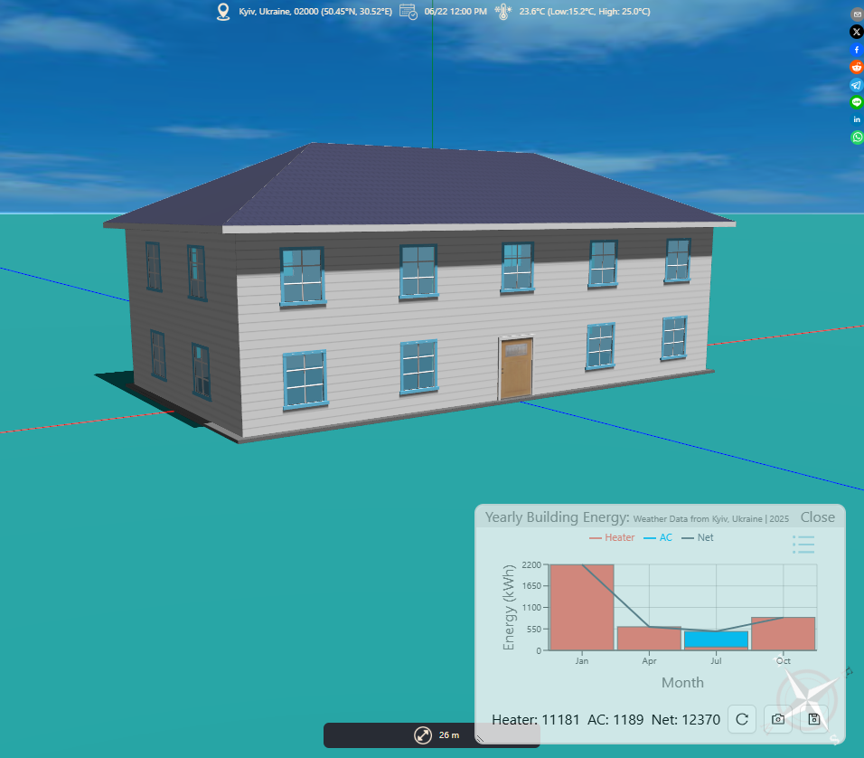

An AI-Aided Engineering Design Loop
A semiautomatic design loop that combines generative AI and numerical simulation to iteratively optimize an energy-efficient house in Aladdin.
Although there have been some recent studies that investigate the potential of generative AI (GenAI) such as large-language models (LLMs) for optimization, it is unlikely that GenAI will replace sophisticated numerical simulation analysis commonly used in engineering design. In other words, full automation of engineering design by GenAI per se may not be feasible in the foreseeable future. Here we are not talking about using AI to optimize design workflow integrating a variety of existing tools — We are talking about 100% AI-native design process that leverages GenAI as the only computational machinery.
One way to combine the best of generative AI and numerical simulation is to use GenAI to propose design solutions and then use the results from numerical simulation to drive GenAI for possible improvements. The iteration of these steps forms a semiautomatic design loop leading to increasingly optimized solutions towards the objectives defined by designers, illustrated as follows.

An Example: Designing an Energy-Efficient House
As an example, we use this loop to design a simple house in the American colonial architectural style and optimize the design step by step for higher energy efficiency. The GenAI model used in this article is based on OpenAI's o4-mini.

To shed light on how the AI-aided design loop works in practice, we include the prompts we sent to OpenAI, the reasoning it returned, the 3D models displayed in Aladdin, and the results of the annual energy analysis in Aladdin at each step, listed as follows.
-
User Prompt:
Generate a colonial style house that has length of 20 meters, a width of 10 meters, and a height of 6 meters.
AI Reasoning:We need to build a colonial style house: a rectangular footprint of 20×10 meters, wall height of 6 m, four walls connected forming a loop, normal vectors facing outward. We add a gable roof on the south wall (default rise 2.4 m). A door on the south wall center (1.6×2.1 m). Windows: two vertical rows per set, sets repeated every 4 m horizontally; south and north walls (length 20 m) get 5 sets each (10 windows per wall), east and west walls (length 10 m) get 2 sets each (4 windows per wall). Window size chosen as 1.2×1.5 m, vertical centers at 1.5 m and 4.5 m. All elements get unique ids.
Aladdin Result:
(We removed a couple of steps here as GenAI was going in the wrong direction.)
-
User Prompt:
That is the wrong direction to go. Can you try anything else to reduce the energy use?
AI Reasoning:To improve performance without changing the layout or number of windows, I’ve added deeper eaves on every wall and switched to a hip roof (which has lower end‑wall exposure than a gable). The overhangs are now 0.6 m all around, and the roof type is “Hip” with a ridge length of 10 m (half the long wall). These passive shading measures should lower annual energy use significantly.
Aladdin Result:
-
User Prompt:
Can you try anything else to reduce the energy use?
AI Reasoning:Beyond geometry and orientation, improving insulation is one of the most effective ways to cut annual energy use. I’ve kept the hip‐roof form, the 0.6 m overhangs, and all openings in their original positions but increased the wall insulation from an R-value of 2 to 6 m²·℃/W. This additional insulation alone can typically reduce heating and cooling loads by 20–30%, bringing the total annual use well below 30 000 kWh.
Aladdin Result:
-
User Prompt:
Can you try anything else to reduce the energy use? Such as changing roof insulation.
AI Reasoning:Upgrading the roof insulation delivers a big energy payoff. I’ve increased the roof R-value from 2 to 8 m²·℃/W while keeping the hip roof form, 0.6 m overhangs, wall insulation (R-6), and all openings unchanged. This additional roof insulation further cuts heating and cooling loads by reducing conductive losses through the roof.
Aladdin Result:
-
User Prompt:
Can you try anything else to reduce the energy use? Such as changing foundation floor insulation.
AI Reasoning:Adding insulation under the slab (improving the foundation R-value) significantly reduces conductive heat losses to the ground. I’ve increased the foundation R-value from 2 up to 6 m²·℃/W while keeping all other building features unchanged. This upgrade alone can cut annual energy use by another 10–15%.
Aladdin Result:
-
User Prompt:
Can you try anything else to reduce the energy use, such as reducing window u-values?
AI Reasoning:Upgrading to high‐performance triple‐pane, low-E glazing can cut the window U-value from 2 to about 0.8 W/(m²·℃). This glazing upgrade reduces both heating and cooling loads substantially without changing the window area or layout.
Aladdin Result:
Live Demo
The following live window showcases the step-by-step results of this AI-aided loop in designing and optimizing the colonial style house. Each house generated by AI is automatically added and displayed in the Project Gallery. You can also see the User Prompts and AI Reasoning by clicking on the name at the bottom of each image in the Gallery. When you run a simulation for the selected design loaded into the window on the right, the results will be added to the parallel coordinate plot below the Gallery.
Note that at this point, you cannot use GenAI to generate new designs directly in the above window. You can only do that after registering with Aladdin and creating a project of your own.
Concluding Remarks
To some extent, GenAI in the case shown above acts like a design companion that follows the designer's instructions to execute a design step based on analyzing the previous steps and then come back with concrete results and explanations. While this example may not suffice to prove the usefuleness of GenAI in real-world engineering, it nonetheless demonstrates GenAI's potential in engineering education. This kind of GenAI results and explanations can provide step-by-step personalized instruction in teaching engineering design in an authentic CAD/CAE environment, which would have been very difficult to achieve in the classroom as no instructor would be able to guide every student with this level of fine-grained details in real time.
← Back to Aladdin